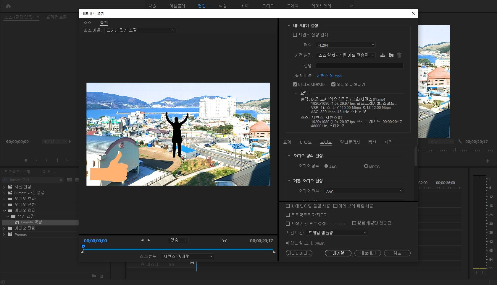
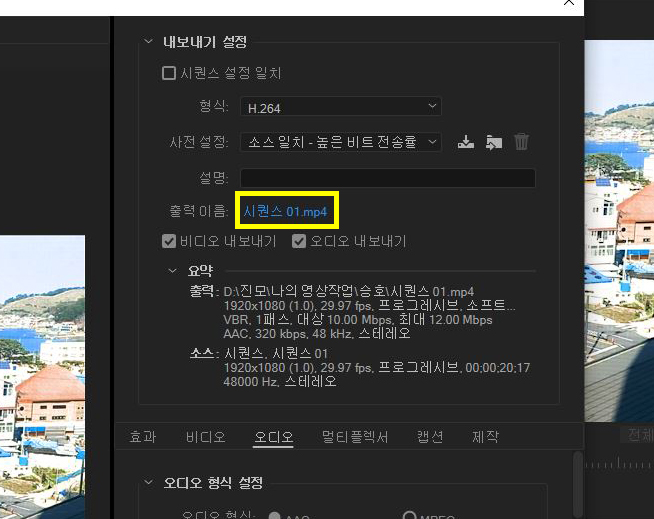

영상 내보내기
이번에는 지금까지 만든 영상을 최종적으로
출력하는 방법에 대해 알아보겠습니다.
파일 > 내보내기 > 미디어로 들어가 줍니다.
그러면 이러한 창이 뜨게 됩니다.

여기서 출력 이름 옆에 '시퀀스01.mp4'를 눌러
영상을 저장할 위치와 영상 이름을 설정해주고

내보내기를 눌러줍니다.
그러면 로딩이 시작되고, 로딩이 끝나면 여러분들이 만든 영상이
아까 설정해둔 위치에 저장되어 있을 것입니다.
자 이렇게 해서 premiere pro의 기초적인 사용법 강의가 모두 끝이
났습니다.
물론 아직 알아야 할 게 아주 많이 남아있지만, 지금까지 배운 것들만
이용해도
충분히 멋진 영상을 만드실 수 있을 것입니다.
감사합니다~